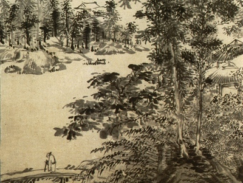

Sacred Texts Confucianism
Buy this Book on Kindle
|  | A Feast of Lanternsby L. Cranmer-Byng[1916] |
This is a short anthology of translations of classic Chinese poetry, including such favorites as Tu Fu and Li Po. This entry in the Wisdom of the East series was written by L. Cranmer-Byng, the series editor. The introduction discusses some of the cultural background of the symbolism in these poems, including such symbols as the moon, flowers and dragons.
Lines From the Tomb of an Unknown Woman
Note